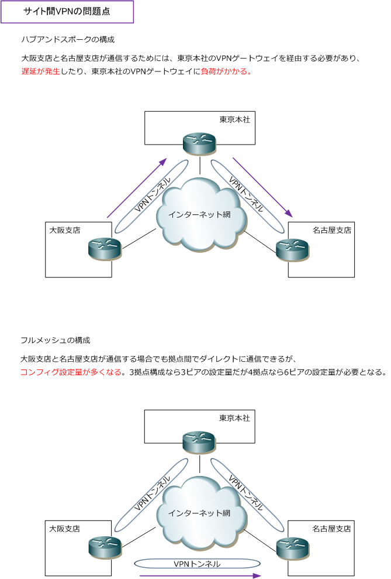
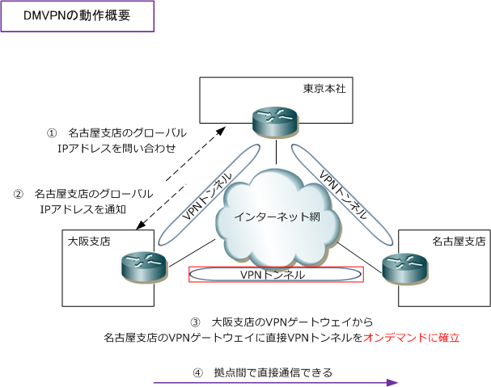
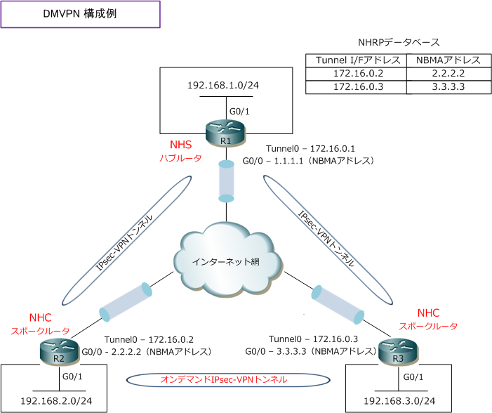

DMVPN
DMVPN（Dynamic Multipoint VPN）とは
DMVPNとは、サイト間VPNの問題点を解決するために実装するVPNのソリューションのことです。この DMVPNをCiscoで実装する場合、NHRP（Next Hop Resolution Protocol）、mGRE（Multipoint GRE） の2つの技術とIPsecといくつかの拡張機能を併用します。まずは、サイト間VPNの問題点を解説します。
サイトツーサイトVPN（サイト間VPN）の問題点
サイトツーサイトVPN（サイト間VPN）ではIPsec-VPNゲートウェイ同士でVPNトンネルを確立させます。 複数の拠点をVPN接続させるためには、ハブアンドスポークまたはフルメッシュトポロジーを使用します。 しかし、これらのトポロジーでVPNを構成した場合、それぞれの構成で以下のような問題点が発生します。
| VPNのトポロジー | 問題点 |
|---|---|
| フルメッシュ | ・ フルメッシュ構成の場合、コンフィグ量が多くなり管理上の手間が発生 |
| ハブアンドスポーク | ・ スポーク拠点間の通信のためにハブ拠点経由するので遅延が発生 ・ ハブ拠点経由することで、ハブ拠点のVPNゲートウェイに負荷がかかる |

ハブアンドスポーク構成では、大阪支店と名古屋支店が通信するためには東京本社のVPNゲートウェイを 経由する必要があり、遅延が発生してしまいます。フルメッシュ構成にすれば、この遅延問題や東京本社の VPNゲートウェイの負荷は少なくなりますが、拠点が増える度にコンフィグ量が増えていってしまいます。
DMVPNによる問題解決
サイトツーサイトVPNのこれらの問題を解決するために、DMVPNという機能を実装することができます。 DMVPNを実装することで、オンデマンドで支社間にも IPsec-VPN トンネルをはれます。DMVPNでは NHRP（next hop resolution protocol）プロトコルを使用して、IPsec-VPNゲートウェイのグローバル IPアドレスを解決します。スポーク間の通信を行う場合、スポーク側はハブ側に通信相手のスポーク側の グローバルIPアドレスを問い合わせて、そのIPアドレス解決後、スポーク同士で直接VPNトンネルを確立。

DMVPN（Dynamic Multipoint VPN）- Ciscoルータでの実装例
CiscoでDMVPNを実装する場合は、複数のスポークとハブ間を接続するためにmGREインターフェースが 利用されます。DMVPNではトンネルインターフェースのコンフィグでtunnel destinationを指定する必要 はなく、ハブ側ではNHRPを使用してスポークの宛先トンネルアドレスを取得します。そのためスポークで ダイナミックアドレスを取得する場合でも、NHRPで、IP-to-NBMAアドレスのマッピングが動的に行われ、 スポーク ⇔ ハブ間のIPsec-VPNトンネルの構築が可能です。次に、スポーク ⇔ スポーク通信の発生時に、 NHRPによりハブ側から対向のスポークのNBMAアドレスを取得して、VPNトンネルをオンデマンドに構築。
